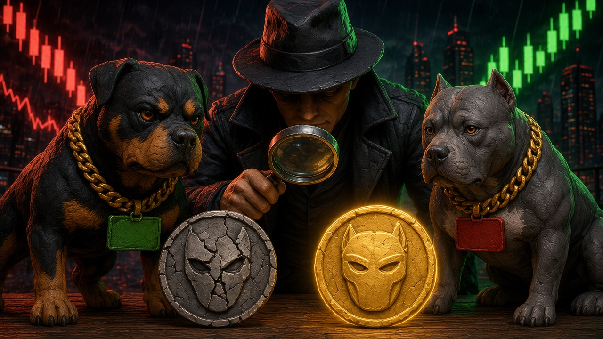

GUIDE
Copycats copy the name, the ticker and the logo. They can't copy the contract address. Here is how to tell them apart, using cases from our own Scam DB.
NFA/DYOR

Every token has one contract address (CA). Names and tickers are free to copy, and on Robinhood Chain we regularly see several tokens with the same name at the same time. The only way to know you have the real one is to match the full CA to the project's official source.
| Real TORCH (DD-007) | 0x000050e18ffa3f8f7ad170eb9cef160eb3ed1111 (ends …1111). Our baseline sniff: no red flags sniffed, 3,702 holders. Not a guarantee. |
| Fake Torch (TORCH) (DD-006) | 0xB78101e4C162e447f00C11aF47C9268d7d778663. Same ticker. Minimal-proxy clone, unverified. Mass airdrop to ~26,119 wallets. DexScreener showed $1,189,925 liquidity vs ~$7 real WETH in the pool. |
| Copycat "Torch" (TRCH) (DD-033) | 0xe323a5Cc2fbe7eF6d7ba12dE80BEDE0Fc9BB4724. Deployer 0x0626…f580 added 100% of the LP at 1:14 PM CT Oct 26 and removed it all at 3:30 PM CT. Price -95%. LP removal tx. |
The trickiest version doesn't use a fake CA at all. Fake "TORCH claim" posts on X reused the real CA (…1111) and told people to "connect your wallet to check eligibility." There was no claim. It was a wallet drainer. A matching CA proves the token, not the link next to it. Don't connect, don't sign.
The Danxx Dogs token is not launched yet, and people have already launched fakes using our name and logo: DD-001 (0xcF4Bd61581e7554B7a96fC63536A783c70a37777), DD-025 (0xF06f89388E84e43beEf2F1E911c0ab6Ca91E7777), DD-026 on Solana and DD-027 (0x680b52a6a3092a93c220d4171813b8b3790c2790). Every one is fake.
/sniff 0x… in the Dip Club. Our bot flags name/symbol matches with older pairs as COPYCAT.Join the Dip Club on Telegram and type /sniff 0x… with the full contract address on the same line. @DanxxDogsSniffBot replies "Sniffing" right away, and the deep check follows. A sniff is a set of public-data flags, not a safety label. NFA/DYOR.
Already flagged? Check the Scam DB and the Ledger of repeat deployers.
Match the full CA to the project's official X account or website. A CA from a reply, DM or airdrop is not a source.
Copycats often airdrop to thousands of wallets (Fake Torch hit ~26,119). Don't interact with it and don't visit links in its name.
Yes. Fake claim posts reuse the real CA to look legit, then send you to a drainer. Never connect your wallet to a "claim".
There isn't one. The Danxx Dogs token is not launched yet. Official links are only danxxdogs.com and @DanxxDogs on X.